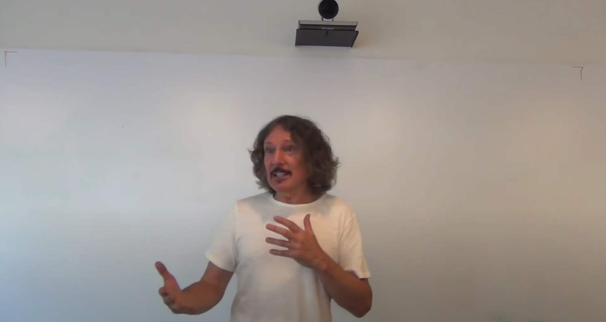
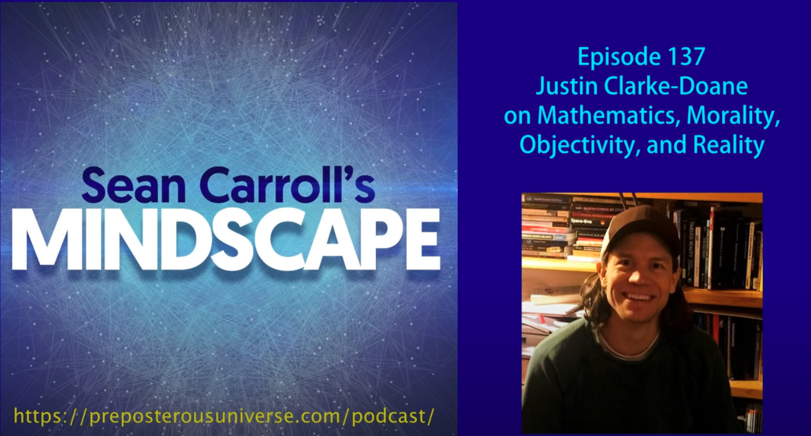
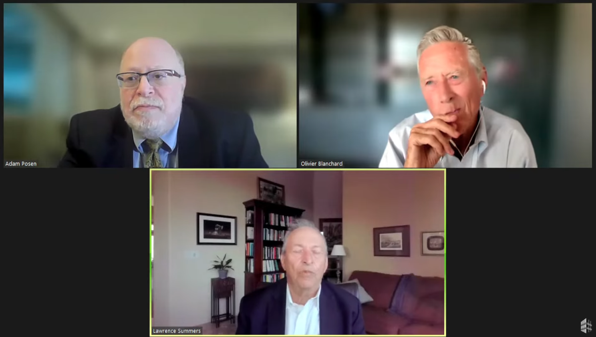
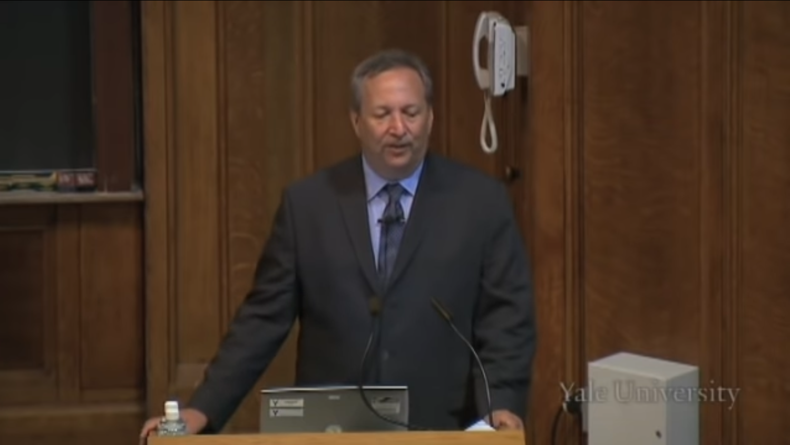

Favorite Videos
Computer Science
Jim Keller on Microprocessors: An interview that discusses Jim's career history, moore's law, his hiring philosophy, and more.
Jim Keller on the future of computing: An interview that discusses Jim's perspectives on the future of computing, AI, life, consciousness, and more.
GPT-4, ChatGPT, and the Future of AI: An interview with Sam Altman on OpenAI, GPT4, ChatGPT, DALL-E and many other leading AI technologies.
AI Safety: A discussion with Scott Aaronson on his work with OpenAI on ChatGPT, AI saftey, AI alignment, and various other topics.
Endgame: An interview with Vitalik Buterin on the Ethereum roadmap and his plans for developing the protocol after the merge
Ethereum 2.0: An interview with Vitalik Buterin on the Ethereum 2.0 and some future plans for the protocol
Simon Peyton Jones on Haskell: An interview and AMA with the lead developer of Haskell.
Bjarne Stroustrup on C++: An interview by Lex Friedman with the creator of C++.
Music Production
Hans Zimmer Composer Roundtable: A roundtable with many of the best living composers, hosted by Spitfire Audio in Hans Zimmer's studio.
Tony Anderson Studio Tour: The first episode in a miniseries on the studio, workflow, and life style of Tony Anderson.
The Lost Prophet: A history and overview of the Prophet 12, including interviews with one the of developers and Tony Anderson.
Why are synths difficult to mix?: An in depth analysis of the spectral properties of synthesizers and an application of these ideas to the creation of a pad.
Eric Whitacre on composing for choir: An in depth overview of the Eric Whitacre Choir sample library by its creator. It explains how he approaches composition.
Eric Whitacre on composition: An interesting interview on Eric's writing process and passion for choral music.
Benjamin Zander on classical music: An insightful introduction to classical music.

Tantacrul on corporate music: An exploration of how corporatism produces soulless music.
Physics

The Theoretical Minimum: The first of over 100 lectures on physics by Leonard Susskind. The lectures are very accessible and cover a wide range of topics.
Quantum Mechanics I: Online lectures from the introduction to quantum mechanics course at MIT.
John Preskill on Quantum Computers: An in interview with one of the foremost scientists in the field of quantum computing on current state and future of the field
Finding Gravity Within Quantum Mechanics: An interesting lecture by Sean Carroll on some of his recent work on quantum gravity and the measurement problem
Quantum Computing and Information: A lecture by Scott Aaronson on quantum mechanics and computing for information theorists.
Philosophy of Time
Geometrical Structure and the Direction of Time: A discussion with Tim Maudlin and David Albert on the nature of time.
Science Saturday: Time's Arrow: An interview with David Albert on statistical mechanics and the arrow of time.
David Wallace on the Arrow of Time: An interview with a philosopher of physics on statistical mechanics and the arrow of time
Time, Totality, and Determinism: An interesting lecture by Jenann Ismael on the relationship between special relativity and free will.
Reversibility and the Past Hypothesis: A lecture by David Albert on temporal asymmetries, the reversibility of Newtonian dynamics, and thermodynamics.
Philosophy of Quantum Mechanics
Philosophy Meets Quantum Mechanics: An introduction to the measurement problem by Dan Hooper at the Theosophical Society.
Interview with Tim Maudlin: The most in-depth interview with Tim Maudlin, focusing on the measurement problem and Bell's Theorem.
Science Saturday: Problems in Quantum Mechanics: An interview with David Albert on the measurement problem and the many worlds interpretation.
David Albert on Quantum Mechanics: A discussion on David's history with physics, the measurement problem, and the problems with the Everett interpretation.
Causation and Laws of Nature
The Nature of Causation: A 4-part lecture series that provides a good introduction to the philosophy of causation by Marianne Talbot.
Causation from the Point of View of Physics: A lecture by Jenann Ismael on the relationship between causation and physics.
Physics, Counterfactuals, and the Macroworld: An interview with Barry Loewer about humean accounts of causation and laws of nature.
Possible Worlds and the Laws of Nature: An interview with Ned Hall on modality and laws of nature, especially the humean/anti-humean divide.
Edward Feser on Laws of Nature: An overview of a variety of perspectives on laws of nature and a defense of an aristotelian account.
The Past Hypothesis and the Quantum Nature of Statistical Mechanical Probabilities: A lecture by david albert on the past hypothesis and various accounts of the laws of nature.
What is a Cause, and Why Does it Happen Before the Effect?: A talk by Carlo Rovelli on the nature of causation in physics and philosophy.
Epistemology
Simon Blackburn on Truth and Objectivity: A lecture on the nature of truth. Special focus is given to the deflationary account and the pragmistist challenge.
Simon Blackburn Einstein Lectures: A two part lecture series from Simon Blackburn on the nature of truth
Realism, Anti-Realism and "Rabbity Moments": A conversation with Daniel Kaufman and Crispin Sartwell about realism in analytic philosophy.
Analytic vs Continental Philosophy: A discussion of the differences between continental and analytic philosophy, with a focus on argumentation and epistemology.
The Truth about "Truth": A conversation on the nature of truth in analytic and continental philosophy.
Knowledge, Truth, and Science: An interview with Liam Kofi Bright on theories of truth in philosophy.
Ethics
Does moral truth exist?: A conversation about moral realism and metaethics with Robert Wright and Gideon Rosen
David Gauthier on morality: A lecture explaining the evolution of his views on morality. A defense is given of the contractualist approach.
Aesthetics
What Art Is: A conversation between Dan Kaufman and Crispin Sartwell on the philosophy of art
Free Will
Sam Harris on Free Will: This video got me interested in philosophy back in high school. It's an overview of the problems with a libertarian conception of freedom.
Free Will, Determinism, and Compatibilism: An interview on free will, moral responsibility, and compatibilism with Gideon Rosen.
Mind
Sean Carroll and Barry Loewer on Mind Chat: An long debate that conclusively demonstrates, in my opinion, the falsity of panpsychism.
Carolyn Dicey Jennings on Attention: An in depth interview with an associate professor of philosophy of cognitive science on attention and consciousness
Mathematics
Category Theory Lectures: The first of a series of lectures on category theory by Bartosz Milewski. The are both accessible and in depth.
Justin Clarke-Doane on Mathematics: An interesting philosophical discussion on the ontology and objectivity of mathematics and morality
Economics
Tyler Cowen interviews Larry Summers: An discussion between two well known economists on a wide variety of topics.
Summers and Blanchard on Interest Rates: A discussion by two famous economists on the roles and determinants of interest rates in the economy.
Secular Stagnation and Monetary Policy: A lecture by Larry Summers on secular stagnation at the central bank of St. Luis.
Daniel Markovits on inequality: An explanation for the rise in inequality over the last few decades, and a critique of meritocracy.
Brian Leiter on Marxism: A lucid explanation of what Karl Marx did and didn't think by someone sympathetic to his views.
Michael Pettis on China: An explanation of the Chinese growth model, why it has become unsustainable, and the reforms needed to ensure economic stability.
Raul Pal on Macroeconomics: An interesting perspective on economic history and development from World War I to the COVID pandemic.
Finance
Finance Theory I: Online lectures from the MIT introduction to finance. This was recorded around the time of the 2008 financial crisis.
The Untold Story of the Financial Crisis: An inside look at the response to the financial crisis from many of the key figures involved.
Money, Power, and Wall Street: A four part documentary on the causes and response to the 2008 financial crisis.
The Power of the Fed: A documentary on the Federal Reserve and monetary policy, focusing on quantitative easing from 2008 to 2020.
The Federal Reserve and the Financial Crisis: The first in a series of lectures by Ben Bernake on the role of the Federal Reserve in the Financial Crisis.
Larry Summers on the Financial Crisis: The first in a two part lecture series by Larry Summers on the causes and response to the Financial Crisis.
Ben Bernanke interviews Janet Yellen: A discussion between two Fed chairs on Yellen's career history and the state of the economy.
Plain Bagel interviews Patrick Boyle: An investment analyst interviews a former hedge fund manager on retail trading, fake gurus, and bubbles.
Religion
Sean Carroll debates William Lane Craig: The authoritative debate on the physics and philosophy of the cosmological argument.
Is God Necessary for Morality?: A solid debate on moral philosophy and religion - whether a god is necessary to ground objective morality.
Climate Change
Climate Change Debate: Bjorn Lomborg and Andrew Revkin discuss climate science and economics on the Lex Fridman podcast.
Renewable Energy to Save the Planet?: Andrew Dessler and Steven Koonin debate climate science and economics at the Soho Forum.
Climate Change Debate: A debate between Bjorn Lomborg and Carl Pope on climate science and economics at the Commonwealth Club.
The Economics of Climate Change: A lecture by a Nobel Prize winning economist on the science economics of climate change.
Politics
Interveiw with Teresa Bejan: An unusually nuanced discussion of free speech from a philosophical and historical perspective
Other

When Einstein Walked with Godel: An interview on Jim Holt's book about the relationship between Albert Einstein and Kurt Godel.
Connecting Physics to the World of Experience: An interview with Jenann Ismael on a wide variety of topics including free will, special relativity, ethics, and more.
The Scout Mindset: An interviw with Julia Galef on rationality, decision making, and the "scout mindset".
BB&T Memories: Never before have I seen such a heartfelt credit card commerical.